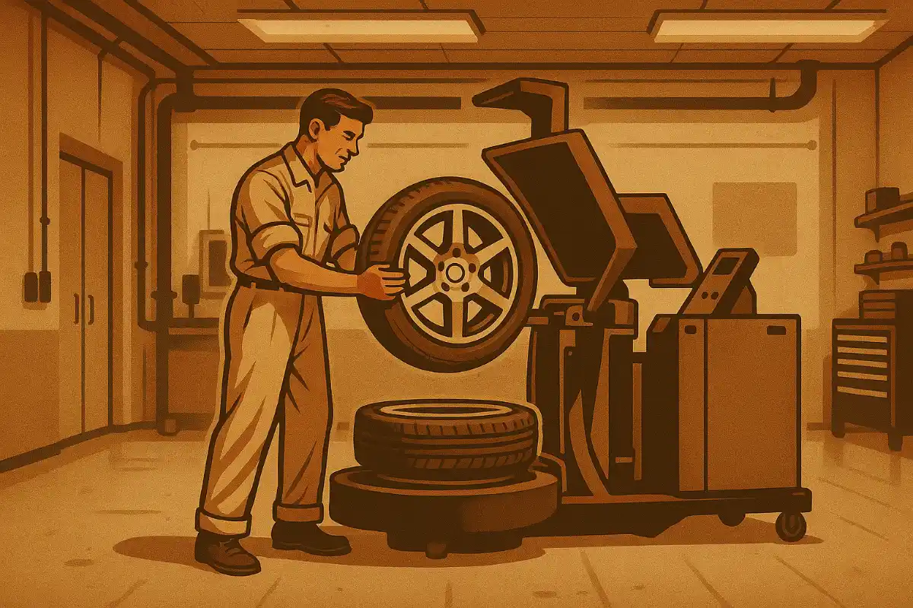
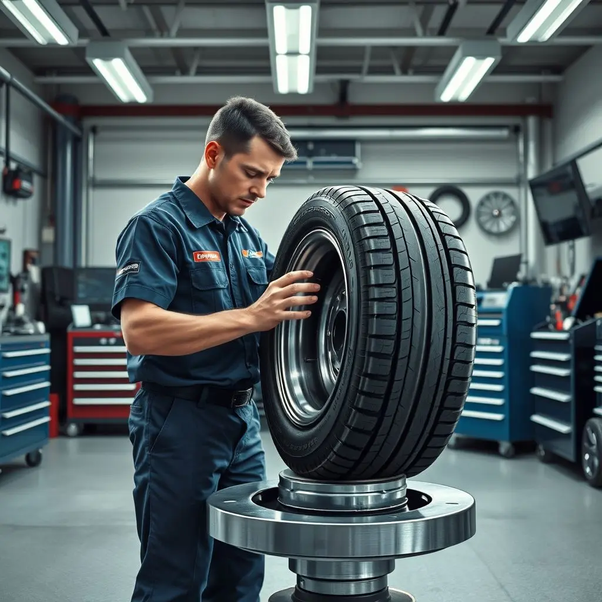

Balanceo de Cauchos: El Secreto para una Conducción Suave y Segura
Publicado el

El balanceo de cauchos es un procedimiento esencial para garantizar una conducción estable y cómoda. A menudo pasa desapercibido, pero su impacto en la seguridad, desgaste de los cauchos y rendimiento del vehículo es crucial.
¿Por qué es importante el balanceo de cauchos?
El balanceo corrige el desequilibrio de los cauchos, evitando vibraciones molestas y reduciendo el desgaste prematuro de los mismos. Aquí algunas razones clave para realizarlo:
- Menos vibraciones al conducir, especialmente a altas velocidades.
- Mayor vida útil de los cauchos, evitando desgaste desigual.
- Protección del sistema de suspensión, previniendo daños en rótulas y amortiguadores.
Mayor estabilidad y seguridad, asegurando una respuesta precisa del volante

¿Cada cuánto tiempo se debe hacer el Balanceo de los Cauchos?
Se recomienda hacer un balanceo en los siguientes casos:
- Cada 10,000 a 15,000 kilómetros, como parte del mantenimiento preventivo.
- Después de cambiar los cauchos por unos nuevos.
- Si notas vibraciones en el volante al conducir.
- Cuando hay desgaste irregular en los cauchos.
Tipos de Balanceo y sus Beneficios
Existen dos métodos principales para balancear los cauchos:
- Balanceo estático: Se ajusta el peso del neumático en un solo eje para evitar vibraciones.
- Balanceo dinámico: Se distribuye el peso de manera uniforme en ambos ejes, garantizando estabilidad en carretera.
CORCAUCHOS: Expertos en Balanceo en Barquisimeto
En CORCAUCHOS, contamos con tecnología avanzada y profesionales capacitados para realizar un balanceo preciso y efectivo. Mantén tu conducción suave y libre de vibraciones con nuestros servicios especializados.
¿Notas vibraciones extrañas en tu vehículo? Agenda una revisión en CORCAUCHOS y conduce con total confianza.

¿Necesitas este servicio en Barquisimeto? Escríbenos y te atendemos.
Escríbenos por WhatsApp